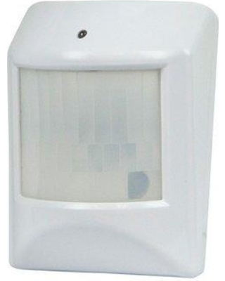
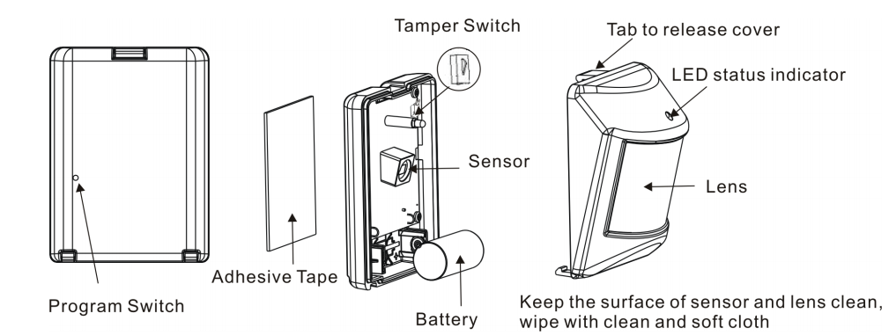

GoControl – Premium Z-Wave Home motion sensor¶

Basic operation¶
- During normal operation without detecting any motion, the detector’s red LED will be off.
- When the sensor detects motion, it will send a status of “ON” and alarm report (Type: 07, Level: 0xFF) to any associated nodes. The red LED will flash once.
-When no movement is detected for 3 minutes (adjustable by configuration setting), the detector will send a status of “OFF” (Basic Set, Value: 0x00) and alarm restore report (Type: 07, Level: 0x00) to any associated nodes, then the unit assumes “sleep” mode. - The motion detector is equipped with a tamper switch. If the cover of the detector is removed, it will send an alarm report (Type: 07, Level: 0xFF) and the red LED will light constant.
How to add to VENUS app¶
To add device to VENUS, below actions are required:

- Press “Add button” (button ‘+’) in app
- Reset device: insert battery and then press z-wave program switch button with a paper clip
- Wait for VENUS scan & detect this device and inform in app
- Reset device again to complete adding device to VENUS
How to add/remove associated device(s) to¶
To add associated device(s) to this sensor, below action is required:
- Add z-wave notified-devices (which will be associated to this sensor) to VENUS
- Select Associate button and then select notified-device(s) to add
- Wake-up this sensor: press Program button by a paper clip
- If successful, pop-up notification displays in VENUS app
To remove associated device(s) from this sensor, below action is required:
- Select Associate button and then select notified-device(s) to remove
- Wake-up this sensor: press Program button by a paper clip
- If successful, pop-up notification displays in VENUS app